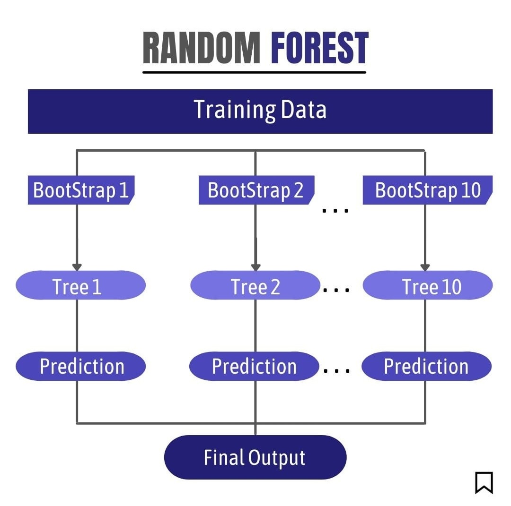

Chapitre 2 Feature engineering
2.1 La forêt aléatoire
Pour mesure l’importance des variables, nous allons directement utiliser un modèle bien connu : la forêt aléatoire (Breiman, 2001).
Petit rappel de ce qu’est une forêt aléatoire (différents arbres de décision entrainés sur des échantillons bootstrappés)

La database va être divisée en deux :
Le premier set, appelé set d’entrainement, contiendra 75% des données.
Le deuxième, appelé set de test, contiendra 25% des données.
set.seed(123)#PSeudo aléatoire : fixer les seeds permet de reproduire le même hasard d'une execution de code à une autre.
smp_size <- floor(0.75 * nrow(df)) #Seuil de 75%
train_ind <- sample(seq_len(nrow(df)), size = smp_size) #On mélange les lignes
train_df <- df[train_ind, ] #75% vont au train set
test_df <- df[-train_ind, ] #25% vont au test set2.2 Sélection, entrainement et tuning du modèle permettant le Feature Engineering
Pour réaliser ses 3 étapes d’un coup, nous allons utiliser un outil très utilisé :
Les grilles de recherche. Elles contiennent différentes valeurs d’hyperparamètres. Chaque combinaison d’hyperparamètre sera testé et la combinaison permettant la meilleure précision sera retenue pour le modèle.
Rappel sur les principaux hyperparamètres d’une forêt aléatoire :
mtry : combien de variables candidates à la scission d’un noeud ?
splitrule : quelle règle régit la scission d’un noeud ?
min.node.size : taille minimale que doit contenir un noeud.
rf_grid <- expand.grid(mtry = seq(1:5),
splitrule = c("gini", "extratrees"),
min.node.size = c(1, 3, 5)
)
group_fit_control <- trainControl(method = "repeatedcv", number = 10, repeats = 5)On entraine le modèle.
model_rf <- caret::train(Proba ~ ., data = train_df,method = "ranger", #random forest
trControl = group_fit_control, tuneGrid = rf_grid, importance="impurity")Résulat de l’entrainement :
model_rf$bestTune #Meilleur tuning## mtry splitrule min.node.size
## 28 5 extratrees 1Quelle est la précision de ce modèle sur un jeu de donnée inconnu ?
On peut répondre à cette question grâce au jeu de test et à la matrice de confusion.
test <- test_df[which(names(test_df) != "Proba")]
predicted <- predict(model_rf, test)
caret::confusionMatrix(test_df$Proba, predicted)## Confusion Matrix and Statistics
##
## Reference
## Prediction 1 0
## 1 68 9
## 0 6 67
##
## Accuracy : 0.9
## 95% CI : (0.8404, 0.9429)
## No Information Rate : 0.5067
## P-Value [Acc > NIR] : <2e-16
##
## Kappa : 0.8001
##
## Mcnemar's Test P-Value : 0.6056
##
## Sensitivity : 0.9189
## Specificity : 0.8816
## Pos Pred Value : 0.8831
## Neg Pred Value : 0.9178
## Prevalence : 0.4933
## Detection Rate : 0.4533
## Detection Prevalence : 0.5133
## Balanced Accuracy : 0.9002
##
## 'Positive' Class : 1
## ## randomForest 4.6-14## Type rfNews() to see new features/changes/bug fixes.##
## Attachement du package : 'randomForest'## L'objet suivant est masqué depuis 'package:ggplot2':
##
## margin2.3 Importance des variables
Le modèle développé, nous allons pouvoir mesurer l’importance des variables, avec la PFI (permutation feature importance) et l’indice de GINI, lié aux forêts aléatoire.
2.3.1 PFI
Petit rappel de ce qu’est la méthode de permutation (permutation aléatoire des valeurs des prédicteurs et mesure de l’impact sur la prédiction)

imp <- FeatureImp$new(predictor, loss = "ce", compare = "difference", n.repetitions = 5)nom_var_perm <- imp$results[1:21,1]
val_var_perm <- imp$results[1:21,3]
barplot(val_var_perm, col=rainbow(25),
main = "Permutation Feature Importance",
xlab = "Feature", ylab = "Importance")legend <- nom_var_perm
par(mar = c(0, 0, 0, 0))
plot.new()
legend("top",legend,legend, col=rainbow(25), lty = 1,
lwd = c(1, 1))2.3.2 Gini
Les forêts aléatoires possèdent une méthode de mesure de l’importance de variable intrinsèque : elle se base sur le critère de Gini.
importance_gini <- varImp(model_rf)
imp1 <- importance_gini[['importance']]
#importance_gini$Overall <- importance_gini$Overall / sum(importance_gini$Overall) (en %)
impgini <- data.frame(row.names(imp1),imp1$Overall)
impgini_sorted <- impgini[order(-impgini$imp1.Overall),]nom_var_gini <- impgini_sorted$row.names.imp1.[1:20]
val_var_gini <- impgini_sorted$imp1.Overall[1:20]
barplot(val_var_gini, col=rainbow(25),
main = "Mean decrease Gini importance",
xlab = "Feature", ylab = "Importance")legend <- nom_var_gini
par(mar = c(0, 0, 0, 0))
plot.new()
legend("top",legend,legend, lty = 1,col=rainbow(25),
lwd = c(1, 1))2.3.3 RFE
La RFE pousse le Feature Engineering un peu plus loin, au-delà d’une simple mesure d’importance, il va aussi sélectionner un nombre de variable optimisé pour obtenir la précision la plus élevé possible.
La RFE doit être tunnée :
functions : quels modèles utiliser ?
methods : quelle type de validation croisée?
number : combien de folds lors de la validation croisée
# ensure the results are repeatable
set.seed(7)
# load the library
library(mlbench)
library(caret)control_1 <- rfeControl(functions=rfFuncs, method="cv", number=10)
results <- caret::rfe(df[,1:94],df$Proba, sizes=c(1:94), rfeControl=control_1)Résultats : nombre de variables retenu, nom de ces variables.
results$optsize
results$optVariablesGraphique représentant l’évolution de la précision du modèle selon le nombre de variable retenu. Le pic se trouve là où la précision est la plus élevée. Affichage des nom des variables retenues.
plot(results, type=c("g", "o"))
nom_var_rfe <- predictors(results)[1:20]
legend <- nom_var_rfe
par(mar = c(0, 0, 0, 0))
plot.new()
legend("top",legend,legend, lty = 1,col=rainbow(25),
lwd = c(1, 1))2.4 Conclusion de la partie Feature Engineering
Nous avons décidés de retenir les variables sélectionnées par la RFE.
La PFI et Gini ont permis de confirmer les prédicteurs les plus importants.